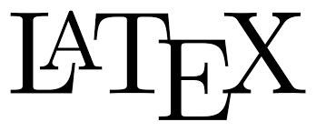

Dans tous les métiers & en particulier en médecine on utilise beaucoup de sigles, abréviations etc. qu’on appellera ici acronymes. Dans un texte bien conçu la première apparition de l’acronyme est précédée de son développement (Arythmie compète par fibrillation auriculaire (ACFA)). Ensuite, on peut utiliser l’acronyme seul : Ce patient présente une ACFA. Mais si le lecteur n’est pas familiarisé avec votre jargon, il peut être utile de rappeler sa signification. Il se reportera alors à une tabled es acronymes (en PDF ou htlm un lien direct est bien pratique).
En-tête
Voyons voir le code nécessaire :
\usepackage{hyperref} % À charger avant glossaries-extra
\usepackage[acronym, % On charge le package pour les acronymes
toc, % pour avoir la table des acronymes dans la table des matières
nomain, % On utilise le package que pour les acronymes pas pour des définitions.
automake, % lance le makeindex à chaque compilation
hyperfirst=false, % On ne met pas de lien sur la première occurence
]{glossaries-extra}
\usepackage{glossaries-babel} % Titres etc. en français
\setabbreviationstyle{long-short} % Style de présentation
\makeglossaries % Pour créer la table des acronymes
\loadglsentries{listacro} % On charge le fichier listacro.tex qui contient les définitionsLa fonction \setabbreviationstyle définit le style de présentation des acronymes. Ici, long-short signifie que la première apparition de l’acronyme sera précédée de son développement. On peut aussi utiliser short-long pour que ce soit l’acronyme qui précède son développement. Les options short-long-sc permet de mettre les acronymes en petites capitales.
Fichier de définitions
Le fichier listacro.tex contient les définitions des acronymes. Voici un exemple de ce fichier :
\newacronym{acfa}{ACFA}{arythmie complète par fibrillation auriculaire}
\newacronym{ivd }{IVD}{insuffisance ventriculaire droite}Dans le texte
Les appels dans le texte se feront comme suit :
Le patient présente une \gls{acfa}.Avec les variantes :
\gls{acfa}pour l’acronyme\Gls{acfa}pour la première lettre en majuscule\glspl{acfa}pour le pluriel\Glspl{acfa}pour le pluriel avec la première lettre en majuscule
Conclusion
Toute la doc (très complète) est disponible ici. À noter, cette extension permet aussi de gérer une liste de définition (comme un dictionnaire).
Un simple mail à docphilmstat@gmail.com ou un message sur Twitter & je vous répondrai dans les plus brefs délais.